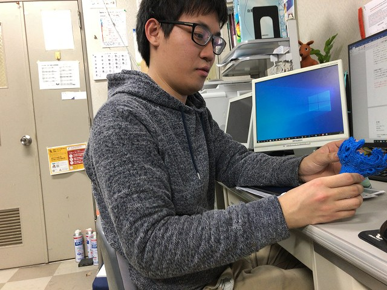

| ・ 火焔型土器 (R02.03.16) | |||
ケーキの時に模様が火焔型土器と似ているとかありました。ちょうどリンクにstlファイルが公開されていたので、実際に火焔型土器を出力してモノを見てみました。
この前の考える人と同様に鑑定はM1Y山さんにお願いしました。Karman渦との関連については中山先生[1]が有名ですね。 |
|||
|
実際のサイズは対応できないので1/3に |
サポート材がガッツリ | ||
|
上のわちゃわちゃが結構対称性が強いのでびっくり |
見たことがある構図 | ||
|
交互渦、双子渦、わちゃわちゃの順 |
Y山さんの鑑定 | ||
|
双子渦、交互渦、わちゃわちゃの順なら |
Reynolds数がおっきくなる順と合うのに | ||
|
それでも縄文人は、自然をよく観察していい仕事してますねぇ |

大切になすってください | ||